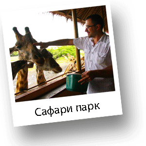

Путешевствие "Мир-Сафари в Бангкоке"
Поездка на экскурсию "Мир Сафари" не оставит равнодушным ни взрослого ни ребенка. Не далеко к юго-востоку от Бангкока под открытым небом расположился живописный парк с животными тропических широт. У Вас будет возможность увидеть различных экзотических животных, живущих под открытым небом. Проезжая по удивительно красивой территории парка на автомобиле, Вы будете чувствовать себя так, что находитесь на африканском сафари. Умные звери уже давно знают, что проезжающие мимо туристы обязательно их покормят, поэтому будут близко подходить к Вам и просить вкусное лакомство.

Вы увидите различных размеров жираф, львов, тигров, экзотических птиц, а так же Вам встретятся по пути зебры, антилопы, медведи, и множество других животных. На территории Вы увидите увлекательное шоу с дельфинами, морскими котиками, белыми медведями, орангутангами, а так же интереснейшее театрализованное шоу, с участием каскадёров. Эта экскурсия предоставит Вам редчайшую возможность сделать удивительные фотографии на огромнейшей территории тропического парка. На этой же территории расположен приключенческий остров и игровая площадка для Ваших детей. Вы можете отведать тайскую кухню, в любом из многочисленных ресторанчиков, приобрести разнообразные сувениры с символикой знаменитого парка, а так же множество других разнообразных сувениров, в том числе и ручной работы.
Второй частью программы, а также главной особенностью сафари парка, считаются занимательные представления с участием животных — орангутангов, белых медведей, дельфинов, белуг и морских котиков. На площади в центре Marine Park, у Вас будет возможность сфотографироваться с целой армией желто-голубых попугаев Маккау, Какаду, Жако. Для всех желающих работает два раза в день бесплатное шоу-представление в стиле «Вестерн» и Голливуд-шоу.
Рекомендации по одежде:
Удобная одежда и обувь

3500 Бат
Выезд - 7:00
4000 Бат
Возвращение - 17:00
5000 Бат
*Стоимость указана за человека
**Дети до 3 лет - бесплатно, без предоставления отдельного места в транспорте
***Дети от 3 до 10 лет - 2700 Бат
Маршрут:
Бангкок Мир Сафари.
В стоимость включено:
Трансфер, русскоговоряший гид, все входные билеты, вода.
Дополнительные расходы:
Личные расходы, чаевые, обед.